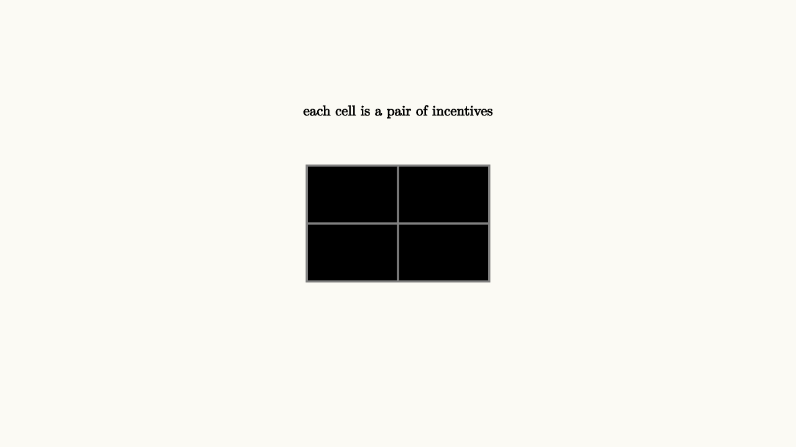

Game Theory Studies Stable Expectations
Many economic decisions are strategic. A firm chooses a price while thinking about competitors. A driver chooses a route while thinking about traffic. A bidder chooses a bid while thinking about other bidders.
Game theory studies these linked decisions. A Nash equilibrium is a set of choices where each player is making a best response to the others:
No one has a unilateral reason to switch.
The key word is expectation. If every driver expects the highway to be crowded, side streets may fill instead. If every student expects everyone else to use the same study room, the room becomes crowded and the expectation helps create the outcome. A strategic situation is one where your best action depends on what you believe others will do.

source
background = [0.985, 0.98, 0.955, 1]
camera = Camera(4.8b)
mesh matrix = block {
. stroke{GRAY, 2} center{[0, 0, 0]} Rect([2.2, 1.4])
. stroke{GRAY, 2} Line(start: [0, -0.7, 0], end: [0, 0.7, 0])
. stroke{GRAY, 2} Line(start: [-1.1, 0, 0], end: [1.1, 0, 0])
. center{[-0.55, 0.35, 0]} Text("3,3", 0.62)
. center{[0.55, 0.35, 0]} Text("0,4", 0.62)
. center{[-0.55, -0.35, 0]} Text("4,0", 0.62)
. center{[0.55, -0.35, 0]} Text("1,1", 0.62)
. center{[0, 1.35, 0]} Text("each cell is a pair of incentives", 0.62)
}
"payoff matrix"
play Fade(0.6)Equilibrium is a stability concept. It says what choices can persist once everyone understands the situation. It does not automatically mean the outcome is fair or efficient. The prisoner's dilemma is famous because individually stable choices can produce a collectively worse result.
A coordination game shows a different flavor. Suppose two people want to meet, and either cafe is fine as long as both choose the same one. There can be two stable equilibria: both choose the north cafe or both choose the south cafe. Neither person wants to switch alone once the other choice is fixed. Here the problem is not conflict so much as aligning expectations.
source
param shift = 0.0
background = [0.985, 0.98, 0.955, 1]
camera = Camera(4.8b)
let Responses = |shift| block {
. stroke{BLUE, 3} Line(start: [-1.8, -0.8, 0], end: [1.8, 0.8, 0])
. stroke{ORANGE, 3} Line(start: [-1.8, 0.7 - 0.7 * shift, 0], end: [1.8, -0.9 + 0.7 * shift, 0])
. fill{GREEN} center{[0.15 * shift, 0.05 * shift, 0]} Circle(0.08)
. center{[0, 1.45, 0]} Text("equilibrium is where best responses meet", 0.62)
}
"expectations"
mesh scene = Responses(shift: $shift)
play Fade(0.5)
"stable point"
shift = 1.0
scene = Responses(shift: $shift)
play Lerp(1.0)Mechanism design asks a deeper question: can rules be shaped so that individual incentives lead to better outcomes? Auctions, matching systems, traffic tolls, and platform rules all live in that space.
Repeated interaction adds another layer. A one-time prisoner's dilemma can push players toward selfish actions. A repeated relationship can support cooperation because today's action changes tomorrow's expectations. Reputation, punishment, trust, and communication all become part of the strategic environment.
Some games also require mixed strategies, where players randomize deliberately. A soccer penalty kicker who always shoots left becomes predictable. A goalkeeper who always dives left becomes exploitable. Randomness can be strategic when each side wants to keep the other from forecasting the next move. The equilibrium then describes stable probabilities rather than stable pure actions.
This is a different use of probability from earlier lessons: uncertainty is chosen on purpose. The model treats unpredictability as a resource.
The lesson to keep: game theory makes expectations part of the model. A stable outcome is one where everyone is already responding optimally to everyone else. The teacher's question is always: what does each person believe, and what action is best under that belief?